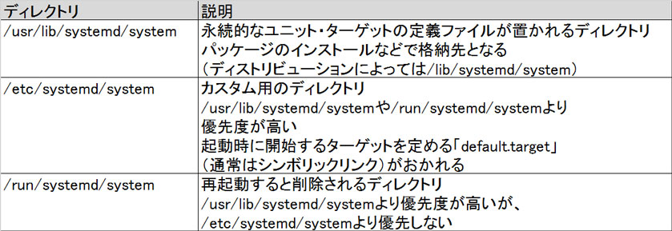
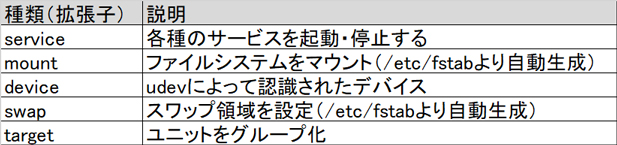
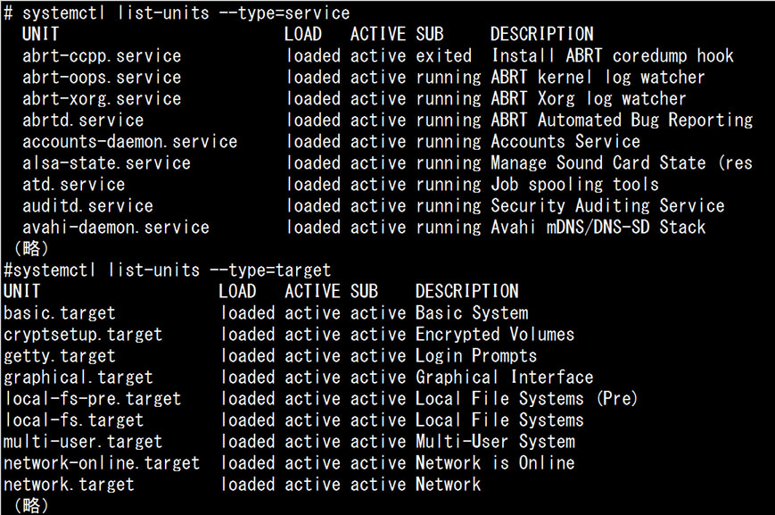
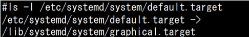
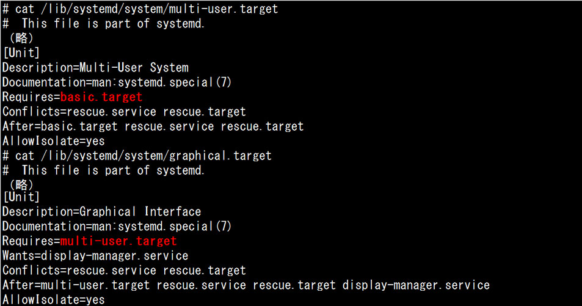
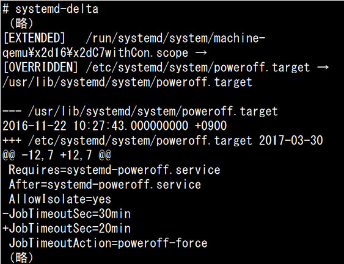
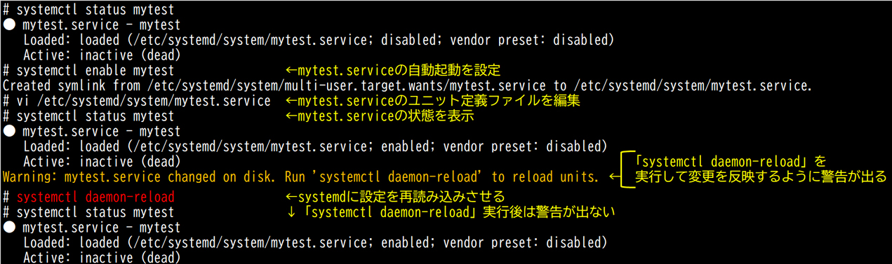

- 問題ID : 22148 システム起動のカスタマイズ
- 履歴
正解
/etc/systemd/system
解説
systemdを使ったシステムにおいて、ユニット、ターゲットの定義ファイルを置くディレクトリは、以下のものがあります。

systemdでは、システムが起動する際、デフォルトでは「default.target」というターゲット（デフォルトターゲット）が起動されます。
「default.target」は、ターゲットそのものではなく、シンボリックリンクを示すファイルであり、/etc/systemd/systemに置かれます。
したがって、正解は
・/etc/systemd/system
です。
その他の選択肢は以下のとおりです。
・/usr/lib/systemd/system
・/run/systemd/system
上表をご確認ください。
・/var/systemd/system
・/systemd/system
存在しないディレクトリです。
参考
【systemdの起動処理】
Red
Hat Enterprise Linux
7.0以降では、SysVinitの代わりにデフォルトでsystemdが用いられ、initの代わりにsystemdというプロセスが起動します。起動
処理時に起動されるサービスはデーモンとしてバックグラウンドで動作します。
systemdでは、Unit（ユニット）という単位で各種処理が進められます。Unitは設定ファイルであり、Unitの設定に従ってsystemd自体が処理を実行します。SysVinitのようにスクリプトを実行するわけではありません。
以下は主要なユニットの例です。

ユニットは様々な種類があり、あらかじめ定義ファイルで定義され、手動で編集可能なものや、必要に応じて自動作成されるものがあります。
例えば上表の「mount」ユニットは、/etc/fstabの内容をsystemdに統合するため、自動生成されるユニットです。systemd-fstab-generatorという初期プログラムが「mount」ユニットを生成します。
「target」ユニットは、それ自体が何か機能を持つのではなく、様々なユニットをまとめるための構造を定義する役割を果たします。
シ
ステム上の複雑な処理は、ユニット単体を指定して1つ1つ操作・管理等するのではなく、依存関係や順序関係に基づいた一連の動作を全体として指定するほう
が効率的で便利です。例えば、SysVinitのランレベルの概念は、順序関係に基づいた複数の処理の集合体を一括操作する例であり、全体としてランレベ
ル3とかランレベル5、と一度指定することで複数の必要な処理を順番に全て実行することが可能です。systemdでは、SysVinitのランレベルの
処理のような順序処理ではなく、依存関係によってグループ化し、並列処理が行われます。
systemdの管理コマンドであるsystemctlでも、1つ1つのユニットを操作するだけでなく、必要なユニットのまとまりである「target」ユニットを対象として操作する場合も多く、こうした「target」ユニットを、単にターゲットとも呼びます。
以下は、実際のユニットの一覧を表示したものです。
「service」ユニットと「target」ユニットをそれぞれ指定して表示しています。

※systemctlコマンドの詳細については別項で紹介しています。
・systemdのデフォルトの起動プロセス
systemdでは、システムが起動する際、デフォルトでは「default.target」というターゲット（デフォルトターゲット）が起動されます。
「default.target」は、ターゲットそのものではなく、シンボリックリンクを示すファイルであり、/etc/systemd/systemに置かれます。
以下の設定例の場合、「graphical.target」ターゲットの定義ファイルである「/lib/systemd/system/graphical.target」を指しています。

「graphical.target」は、従来のinitで言うランレベル5にあたる起動状態を構成するターゲットであり、ランレベル5以外にも、各ランレベルに相当するターゲットが存在します。
以下は、各ランレベルとそれに相当するターゲットを対比したものです。
なお、各ターゲットは、必ずしも全ての項目に個別の設定が行われているわけではありません。
以下に「multi-user.target」「graphical.target」の内容を表示します。

表
示例で確認できるように、「multi-user.target」には「basic.target」が、「graphical.target」には
「multi-user.target」が必要とされており、この設定内容に従って、前提となるターゲットも併せて起動されることで、全体としての設定が
成立しています。「basic.target」はシステム起動の比較的初期段階に必要とされるユニットで、他のターゲットの動作の前提となる動作を担って
います。
・systemdのユニット、ターゲットの定義ファイルを置くディレクトリ
systemdを使ったシステムにおいて、ユニット、ターゲットの定義ファイルを置くディレクトリは、以下のものがあります。
各ディレクトリには優先度があり、それぞれのディレクトリごとに、同じ名前のユニット、ターゲットの定義ファイルを置くことができます。
・systemd-delta
同じファイル名のユニット、ターゲットの定義ファイルが複数あり、上図のディレクトリの優先度に基づいて、デフォルトの定義ファイルを上書きしている場合等、どのファイルがどのように影響を受けているか、確認できるのが「systemd-delta」コマンドです。
以下は、コマンドの実行例です。

[OVERRIDDEN]
の行に、「/usr/lib/systemd/sysytem/poweroff.target（デフォルト）」が、優先度の高いディレクトリにある
「/etc/systemd/system/poweroff.target」で上書きされたことが記されています。その下に、具体的な変更内容が表示さ
れています。
・定義ファイルの再読み込み
各ユニットやターゲットの定義ファイルを新規作成や変更した場合、以下のコマンドでsystemdに設定を再読み込みさせます。
# systemctl daemon-reload
以下は実行例です。
ユニット定義ファイルを変更したサービスの状態を表示すると、「systemctl daemon-reload」の実行を促す警告が出ます。
